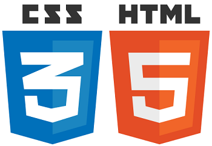

First steps
Computer science was an emerging discipline in the late 1950s that began to consider time-sharing between computer users, and later, the possibility of achieving this over wide area networks. Independently, Paul Baran proposed a distributed network based on data in message blocks in the early 1960s and Donald Davies conceived of packet switching in 1965 at the National Physical Laboratory (NPL) in the UK and proposed building a national commercial data network.
29. 10. 1969 the internet was born!
On the evening of October 29, 1969 the first data travelled between two nodes of the ARPANET, a key ancestor of the Internet.
U.S. Department of Defense contract
The Advanced Research Projects Agency (ARPA) of the U.S. Department of Defense awarded contracts in 1969 for the development of the ARPANET project, directed by Robert Taylor and managed by Lawrence Roberts. ARPANET adopted the packet switching technology proposed by Davies and Baran, underpinned by mathematical work in the early 1970s by Leonard Kleinrock at UCLA. The network was built by Bolt, Beranek, and Newman.
First HTML
British scientist Berners-Lee specified HTML and wrote the browser and server software in late 1990.
The first publicly available description of HTML was a document called "HTML Tags", first mentioned on the Internet by Tim Berners-Lee in 6 august 1991.
1994. HTML 1.2
In this version, out of its forty with a penny of tags, as many as 3 tags have already appeared, which hinted at some kind of visual design of the document (for example, bold italic). The rest of the tags served solely for logical markup.
1994. Foundation of a W3C
The W3C mission is to lead the World Wide Web to its full potential by developing protocols and guidelines that ensure the long-term growth of the Web. Below we discuss important aspects of this mission, all of which further W3C's vision of One Web.
November 24, 1995. HTML 2
The emergence of forms and slect tag
December 17, 1996 - CSS
Cascading Style Sheets (CSS) is a style sheet language used for describing the presentation of a document written in a markup language such as HTML. CSS is a cornerstone technology of the World Wide Web, alongside HTML and JavaScript.
Syntax
CSS has a simple syntax and uses a number of English keywords to specify the names of various style properties.
A style sheet consists of a list of rules. Each rule or rule-set consists of one or more selectors, and a declaration block.
"First Browser War (1996-2001)"
In 1996, Netscape's share of the browser market reached 86% (with Internet Explorer edging up 10%); but then Microsoft began integrating its browser with its operating system and bundling deals with OEMs. Within 4 years of its release IE had 75% of the browser market and by 1999 it had 99% of the market.
12 May, 1997 – CSS 2.0
A superset of CSS 1, CSS 2 includes a number of new capabilities like absolute, relative, and fixed positioning of elements and z-index, the concept of media types, support for aural style sheets (which were later replaced by the CSS 3 speech modules) and bidirectional text, and new font properties such as shadows.
The W3C no longer maintains the CSS 2 recommendation.
18 December 1997 – HTML 4.0
HTML 4.0 was published as a W3C Recommendation. It offers three variations:
- Strict, in which deprecated elements are forbidden
- Transitional, in which deprecated elements are allowed
-
Frameset, in which mostly only frame related elements are allowed.
Latest generally accepted standards

On 28 October 2014, HTML5 was released as a stable W3C Recommendation, meaning the specification process is complete.
On 2011, CSS3 was released as a stable W3C Recommendation.
"Second Browser War (2004–2017)"